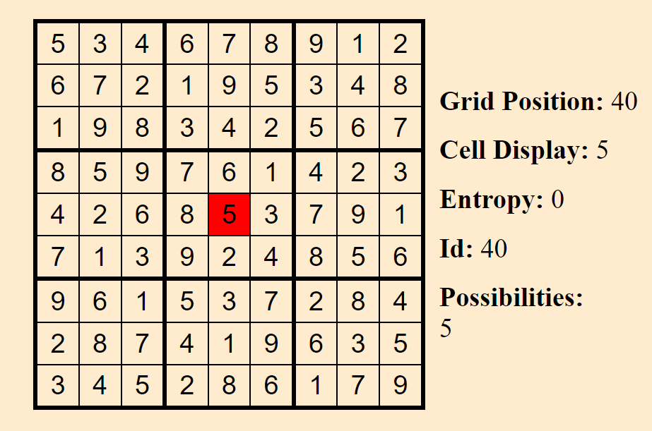

|
Laser CuttingI first got into laser cutting when I was in Community College where some web surfing gave me ideas plenty where all I needed was a machine of which I got access to with the start of my college career. The largest of the projects is a topographical road map of my home town. Spanning over a couple years. Though a large portion was taken up by Covid and not having access to a laser. All my work has been done in Inkscape as well as other tools such as QGIS for the map data. |
PianoSince I was a child I have had a knack for keeping rhythm. When I first picked up the guitar and then later the piano I grew this love of playing the instrument(s). There is this calm peacefulness that you get from just sitting and playing a song. Nothing exists outside the instrument at that moment. I keep it set up next to my desk at home so I always have the easy opportunity to take a break and play Its procrastination but productive. |

|

|
MeadAnother hobby of mine has been mead making. There is an ungodly amount of variation that one can perform and result in fully different products and that exhilarates my creative side. Pictured here is one of the more recent batches I have produced. Made using raspberries and blackberries it gained this brilliant color and came out tasting amazing. I almost always have a batch fermenting on the side trying out some new idea or combination. Some turn out great such as the berry one, others not so much like in grapefruit. |
About Me
Hello, My name is Roger Jacobsen, I am a recent college graduate from Western Washington University where I earned a Bachelor of Computer Science with a minor in Mathematics. With my degree in progress I further specified my studies into Video game and Front End Development, targeting specific classes and spending available free time developing.
Now to actually talk about me.
At heart I am a maker. For those who don't know what that is, it is someone who enjoys the act of creating as a hobby very often within the technical and engineering space. Though artistic design is included as well.
These people often indulge in the whole process from design to production and enjoy seeing their ideas come to life.
It was through this passion that I arrived at computer science. The practice stood out to me as this wonderful balance between my passion and usefulness within our evolving society.
Going beyond my degree, my hobbies include practicing music, mostly piano and guitar, laser cutting/engraving, and general making of other kinds that don't consistently follow a type. My favorite so far being laser cutting/engraving and designing things for it. At this point I've made multiple projects on the laser with the more notable being a custom Settlers of Catan board and a topographical road map of the greater seattle area.

|  |
Sudoku SolverTo keep my javascript skills strong I have been working on various small games/projects hosted in the browser. The most recent project has been this sudoku solver. As you may see in the demo section I have been really fascinated in procedural generation algorithms and Sudoku was an amazing project to help in the learning of Wave Function Collapse and entropy of a system. This is where every cell has a base set entropy that is decreased as time goes on and more neighbor cells get reduced entropy. A follow up project would be a image generator that can create "random" images from a set of connecting smaller images where each smaller image has rules for which neighbors it can have. |
Laser CuttingI first got into laser cutting when I was in Community College where some web surfing gave me ideas plenty where all I needed was a machine of which I got access to with the start of my college career. The largest of the projects is a topographical road map of my home town. Spanning over a couple years. Though a large portion was taken up by Covid and not having access to a laser. All my work has been done in Inkscape as well as other tools such as QGIS for the map data. |

|
|
|
MeadAnother hobby of mine has been mead making. There is an ungodly amount of variation that one can perform and result in fully different products and that exhilarates my creative side. Pictured here is one of the more recent batches I have produced. Made using raspberries and blackberries it gained this brilliant color and came out tasting amazing. |